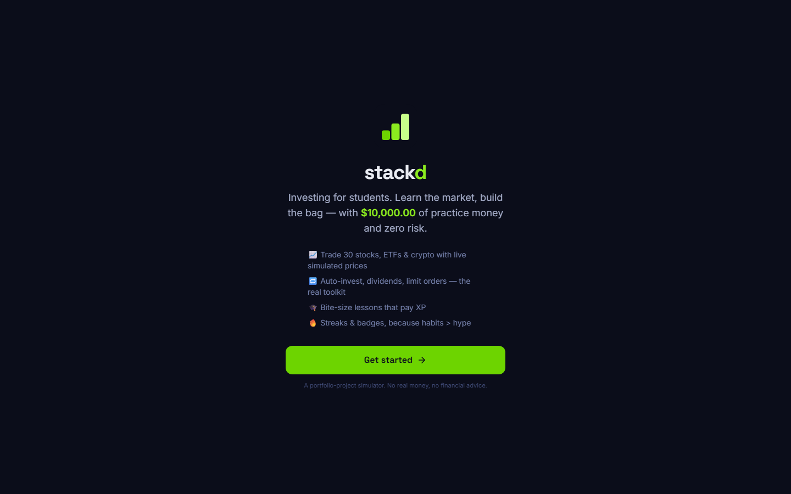
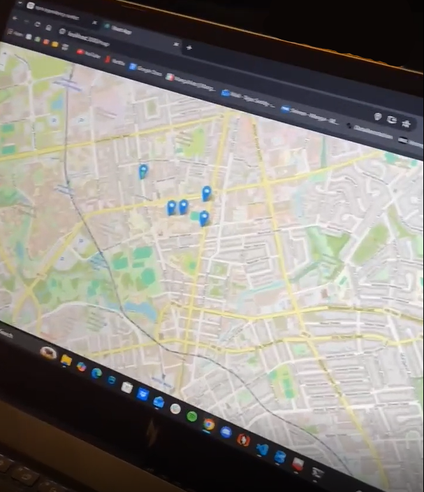
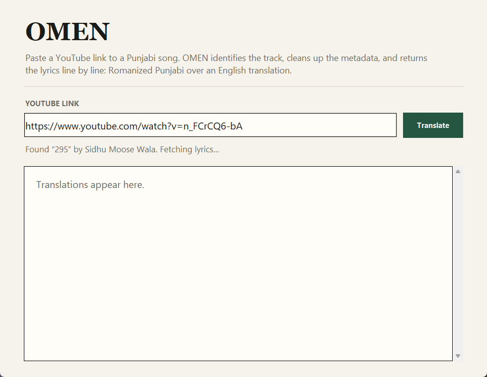
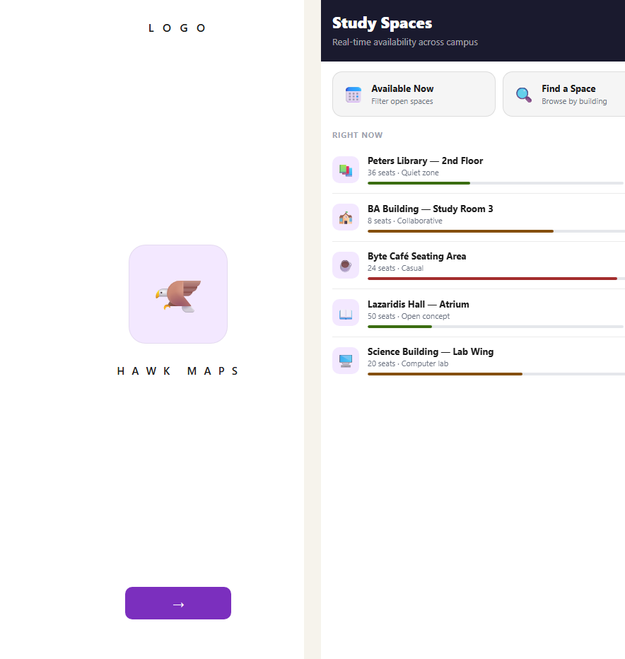
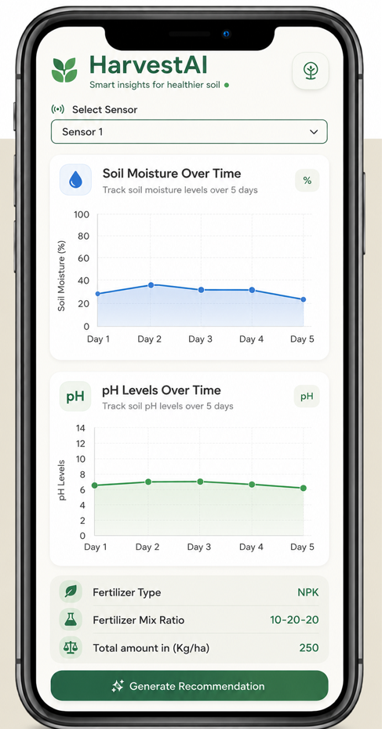
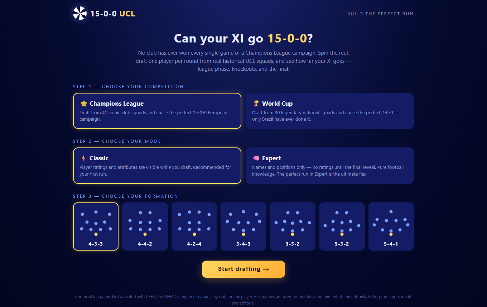

Stackd
A browser-based paper-trading app where students learn to invest with $10,000 of practice money. Real brokerage mechanics, zero real risk.

Software developer looking for SWE / DevOps internships
Computer Science student at Wilfrid Laurier University. I build full-stack and applied-AI tools: market simulators, campus navigation, agricultural decision support. I care about the unglamorous parts, clean data in and repeatable results out.
A browser-based paper-trading app where students learn to invest with $10,000 of practice money. Real brokerage mechanics, zero real risk.

A full-stack web app that breaks the ice between university students by showing nearby people with shared interests on a live map.

Paste a YouTube link to a Punjabi song and get the lyrics back line by line: Romanized Punjabi over an English translation that keeps the idiom intact.

A campus app for Wilfrid Laurier University: interactive map, live study-space availability, club events, and an AI assistant that still works offline.

Recommends the nitrate fertilizer mix and amount for a specific location by combining soil-sensor readings, government soil data, and regional climate.

A spin-draft fantasy game inspired by 38-0-0: draft one player per round from real historical squads and see whether your XI can run a whole Champions League or World Cup campaign undefeated.
